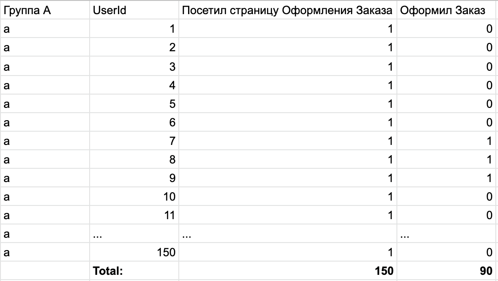
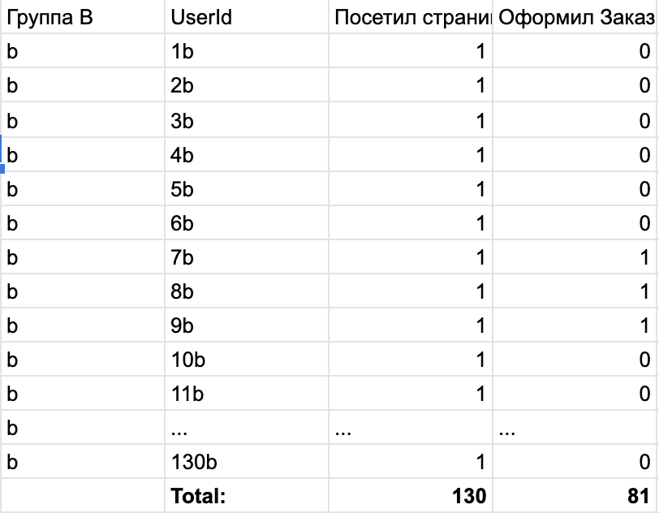

Z - критерий для равенства долей
Этот критерий или, как мы договорились – инструмент, следует использовать тогда, когда мы хотим провести A/B тест для какой-либо фичи, в которой нас интересует конверсия после использования нашей фичи. В таком случае, мы можем представить наши данные в виде испытаний Бернули.
Кол-во пользователей, которые просто воспользовались нашей фичей, представим как m.
Кол-во пользователей, которые воспользовались нашей фичей и сделали полезное действие, представим как n.
В таком случае, математическое ожидание или, в нашем случае, конверсия будет равна: p = n/m - число успешных наблюдений ко всем наблюдениям.
Итак, как посчитать Z - критерий для двух долей для A/B теста:
- Считаем математическое ожидание для каждой из групп:
p1 = n1/m1 p2 = n2/m2 - Считаем стандартное отклонение для каждой из выборок:
Sigma1 = (p1*(1-p1)/m1) ^1/2 Sigma2 = (p2*(1-p2)/m2) ^1/2 - Считаем z – статистику:
Z = (p2-p1)/(Sigma1^2+Sigma2^2)^1/2 - Дальше мы смотрим, какой P-value соответствует полученной z - статистики и делаем свой вывод.
Итак, давайте разберем кейс, в котором мы делаем улучшение на странице оформления заказа для группы B, а в группе A все остается по-старому. И хотим понять, можем ли мы с уверенностью в 95% (1-Ⲁ, при Ⲁ=5%) сказать, что результат, который мы получим, будет не случаен.
В таком случае, у нас будут данные вот такого вида:
 
Если кратко:
В группе A - 150 человек посетили страницу оформления заказа и 90 оформили заказ
В группе B - 130 человек посетили страницу оформления заказа и 81 оформили заказ
Сразу сформулируем наши статистические гипотезы:
H0 - конверсия в группе A и B равны
H1 - конверсии в группах не равны
Давайте пройдемся по нашим формулам:
Математическое ожидание (в нашем случае, это еще и конверсия) равно:
Для группы A: p1 = 90/150 = 0.6
Для группы B: p2 = 81/130 = 0.62
Дальше считаем стандартное отклонение для каждой из групп: Sigma1 = (p1*(1-p1)/m1) ^(½) = (0.6*(1-0.6)/150)^(½) = 0.04 Sigma2 = (p2*(1-p2)/m2) ^(½) = (0.62*(1-0.62)/130)^(½) = 0.042
Считаем Z статистику: Z = (p2-p1)/(Sigma1^2+Sigma2^2)^½ = (0.62-0.6)/(0.04^2 + 0.042^2)^(½)=0.344
Теперь, ищем значение P-value в табличке по полученному Z: P-value (при Z ~ 0.34) = 0.3669, Таблица значений
А дальше, мы сравниваем полученную Z статистику с нашим пороговым значением Ⲁ.
В нашем случае, P-value>Z -> 0.3669>0.05(5%), в таком случае, мы не можем отвергнуть нашу нулевую гипотезу о том, что конверсии равны. Проще говоря, полученная разница в конверсии случайна между группами, и мы не можем сказать, что наши изменения статистически значимо повлияли на конверсию.